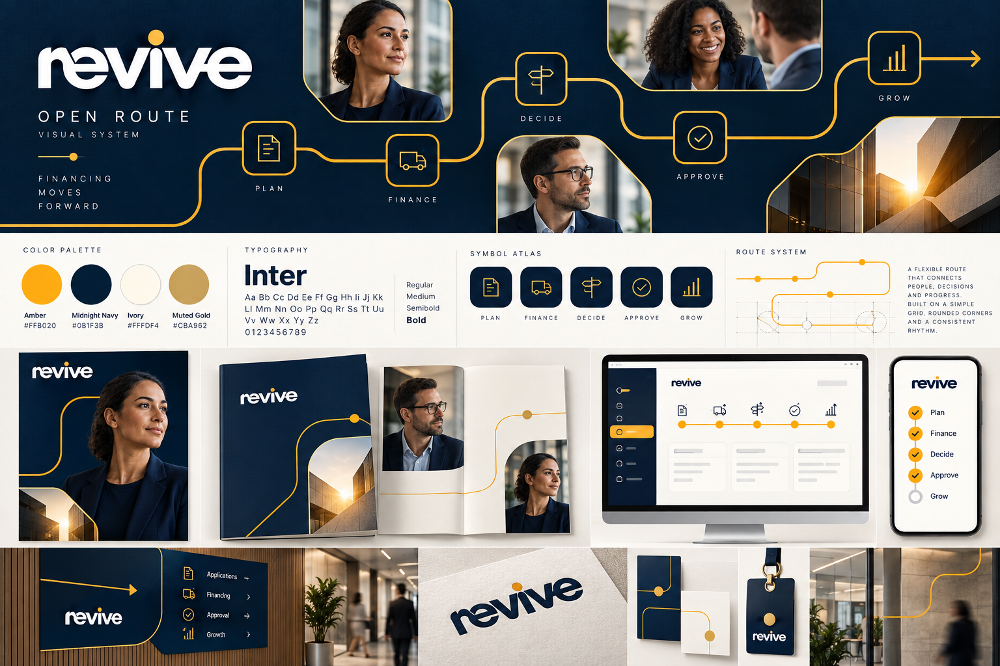
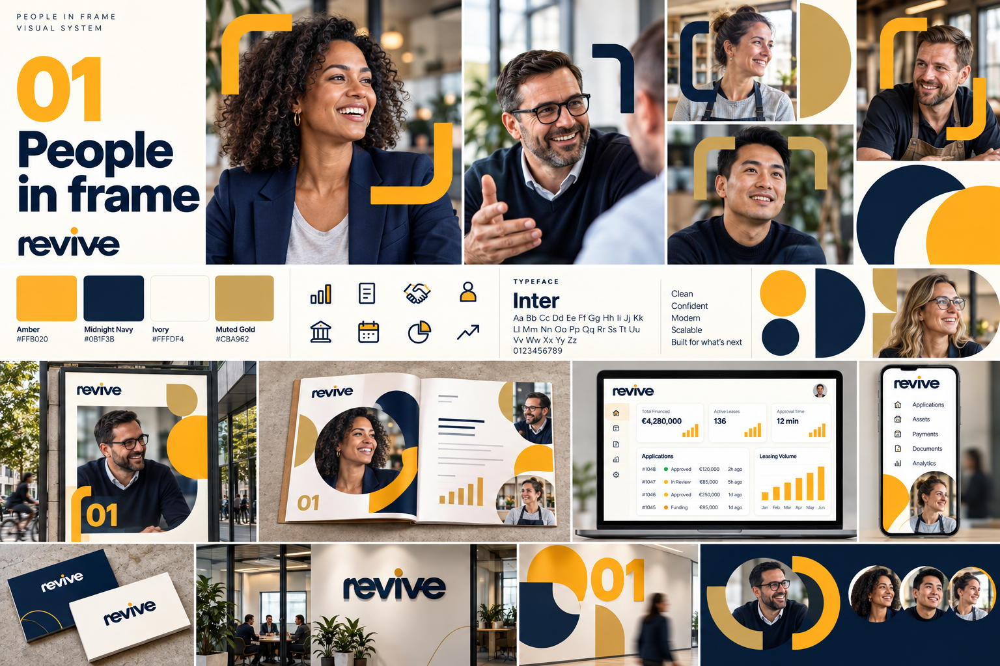
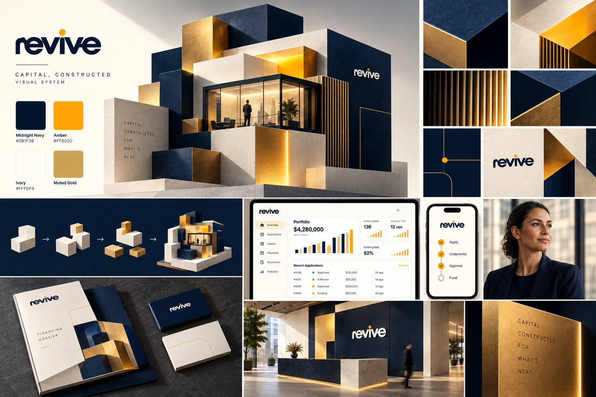

Open Route
Een doorlopende lijn verbindt herkenbare financiële momenten en loopt door in fotokaders, patronen en digitale stappen. De symbolen zijn opgezet als een samenhangende atlas. De richting vertaalt Wise’s nadruk op universeel leesbare tekens en uitgesproken helderheid naar Revive’s gekozen kleuren.
Referentie: Wise — A brand for everywhere

People in Frame
Fotografie staat centraal in de identiteit. Zware hoekvormen en grote uitsneden maken de portretten herkenbaar over campagne, voorstel, app en werkomgeving. De mensgerichte art direction en optimistische beeldenergie zijn geïnspireerd op Monzo, met Revive’s amber en nachtblauw als vaste kleuren.
Referentie: Monzo — We’ve had a little makeover

Capital, Constructed
Gelaagde blokken vormen een krachtig, ruimtelijk hoofdbeeld. Dezelfde bouwstenen schalen terug naar modulaire interfacekaarten, drukwerk en omgevingsgrafiek. De richting vertaalt Stripe’s modulaire productverhalen en aandacht voor bruikbaar kleurcontrast naar Revive’s eigen vormentaal.
Referenties: Stripe Connect — achter de visuele ervaring · Stripe — toegankelijke kleursystemen
